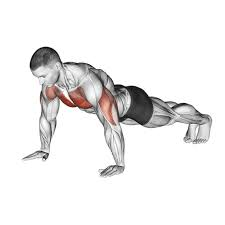
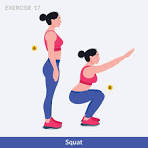
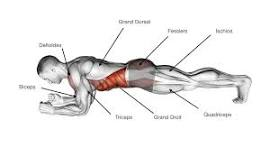

🏋️ Les Exercices
Trois exercices simples pour débuter. Pas besoin de matériel !
🤸 Les Pompes

Description
Les pompes sont un exercice classique pour renforcer les muscles des bras, des épaules et de la poitrine. Place tes mains à plat sur le sol, légèrement plus larges que tes épaules. Descends ton corps jusqu'à ce que ta poitrine frôle le sol, puis remonte.
Comment faire ?
✅ Dos droit (ne pas creuser les reins)
✅ Regarder le sol, pas devant toi
✅ Descendre lentement, remonter fort
✅ Commencer par 3 séries de 10 répétitions
🦵 Les Squats

Description
Le squat est le roi des exercices pour les jambes ! Il travaille les cuisses, les fessiers et les mollets. Debout, pieds écartés à la largeur des épaules, descends comme si tu allais t'asseoir sur une chaise imaginaire, puis remonte.
Comment faire ?
✅ Genoux dans l'axe des pieds (ne pas les rentrer vers l'intérieur)
✅ Dos bien droit, regarde droit devant
✅ Talons bien à plat sur le sol
✅ Commencer par 3 séries de 15 répétitions
🧱 Le Gainage (Planche)

Description
Le gainage renforce les muscles du ventre et du dos. C'est la base d'un corps équilibré ! Allonge-toi face au sol, appuie-toi sur tes avant-bras et la pointe de tes pieds. Tiens la position sans bouger.
Comment faire ?
✅ Corps bien aligné comme une planche de bois
✅ Ne pas lever les fesses vers le plafond
✅ Respire régulièrement
✅ Commencer par 3 séries de 20 secondes